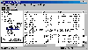
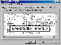

|
|
| 当前位置：电脑报电子版 > 1999 年 > 42 期 > 软件世界 > 勤俭持家——系统内存的优化使用 |
| 《 勤俭持家——系统内存的优化使用 》 |
一、知己知彼——监视内存的使用 要了解Windows系统中的内存变化情况，要了解程序代码在内存中的加载和卸载情况，需要一定的内存知识。我们可以通过一些简单方法了解内存的使用情况，使自己能够判断电脑系统的内存是否够用，以及如何选择节约内存的程序，如何有效地利用内存。1目测法 如果系统打开一个程序或关闭一个程序，都需要大量地读写硬盘，甚至是仅仅打开一个文件夹窗口都要明显的等待。也就是说，硬盘经常是转个不停，系统启动缓慢，在没有病毒的情况下，说明系统的内存紧张，虚拟内存的使用太过频繁。 2Windows系统监视程序 通过系统监测工具监测是比较准确的了解内存的手段。Win95/98就带有一个功能较为全面的系统监测程序。 点击“开始”，选择菜单项“程序/附件/系统工具/系统监视器”，打开系统监视器。注意，有些操作系统没有安装该工具，可以通过控制面板的“添加/删除程序”来安装该工具。 点击系统监视器的界面菜单项“编辑/添加项目”，在打开的窗口中的“类别”栏中选择“内存管理程序”项，在右面的窗口中就列出了多个内存监视项目，有些项目比较专业，为了查看系统内存是否紧张，我们一般可以选择查看“废启”和“出页”项目，如果这两个项目常常维持到较高的数值，则说明系统的内存紧张，需要添加内存或优化。 3其他系统监视程序 Windows中的系统监视程序虽然监视的项目比较多，但并不都很实用，你可以试用其他的监视程序，例如WinSystem 98就是一个很好的系统监视程序（图1），它主要监视CPU、硬盘读写、内存占用、网络和Modem，还可以监视系统温度、系统电压等，也可以自动优化内存，释放内存空间。特别是它的进程监视管理，可以显示当前驻留在内存中的程序信息，用户可以清楚地看到哪个程序占用了大量的内存，并可中断某个驻留程序的执行，释放内存空间。该工具既是一个系统监视工具，也是一个内存优化工具。该工具的下载地址为wwwmultimaniacom/newtech，下载文件大小只有200KB。 二、浪费惊人——桌面和窗口 Win98的一个进步，就是有漂亮的Web形式窗口和变化多端的桌面主题，但这需要付出相当大的内存空间。1设置窗口 Windows98的默认窗口是Web窗口，即该窗口有一个信息栏，可以显示选择的文件信息，如果是图片，则将显示图片的略图，这样一个窗口是非常消耗内存的（根据不同情况，可能要多占用几百KB到上兆的内存），大多数时候，你是不必使用这些花花架子，尽可能地简洁窗口。 打开一个文件夹窗口，选择菜单“查看/文件夹选项”，在打开的窗口中选择“传统风格”，这样系统的文件窗口样式就统一变成了简单Windows95窗口样式了。 如果还要简洁窗口，可以在文件窗口中的查看菜单中去掉自己认为没有必要显示的项目，如地址栏、文本标签等，但这些小改动节约的内存有限，还可能带来操作上的不方便。 2设置桌面 不要什么桌面主题，直接在“控制面板”的“文件添加/删除”工具中将桌面主题删除。也不要设置墙纸，有些BMP格式的墙纸要占用大量的内存空间。如果不是迫切需要，也不要设置屏幕保护方式。这些都可以节约你宝贵的内存。 3精心布置桌面快捷方式 桌面上不需要的快捷方式可以删除，也可以将一些不常用的快捷方式分类保存在少数的桌面目录中，一些朋友桌面上摆满了快捷方式和文件图标，内存的占用就可想而知了。另外Windows98的任务栏中也要注意有控制地添加快捷方式。 4其他 还有很多可以提高系统速度、节约内存的方法，例如取消不必要的文件关联、减少新建菜单的项数、鼠标指向图标不显示信息等，但要注意的是不要因噎废食，例如有的朋友为了节约一点点内存，取消了系统时间在任务栏中的显示，似乎没有必要。 三、隐秘的内存杀手——驻留内存的程序 1．驻留内存程序一个程序的执行，是先将程序代码和相关的数据读入内存，再从内存中将数据发送到CPU。内存在一个程序的运行周期中，始终保存着该程序的代码数据。有些程序在系统启动到系统关闭都一直在运行，就称为驻留内存程序。有些驻留程序是我们知道的，如实时防毒软件Kill98、ZipMagic等。有些驻留程序是我们不知道的，如系统的驱动程序等。 2．监视进程 监视目前正在执行的程序（称为监视进程），最简单的方法就是按“Alt＋Ctrl＋Del”键，然后在弹出的“关闭程序”窗口就可以看到目前正在运行的程序，也可以在该窗口中将某个程序中断执行。 如果要更详细了解正在内存中执行的程序，可以从“开始”栏中选择菜单“程序/附件/系统工具/系统信息”，在弹出窗口中展开“软件”分支列表，选择“正在运行的任务”，就可以看到目前正在内存中驻留运行的程序（图2）。另外从“软件”列表项中，还可以看到多项和内存使用有关的项目，如系统开机启动的程序、加载的32位模块（设备驱动程序等）。 3．控制内存驻留程序 对于一个小内存的系统，如果不是特别需要，就尽量不要使用那些驻留内存的程序。当然实时监控的防毒软件还是有必要选择一个，像Kill98驻留内存的病毒监测程序只占用了大约13MB的内存空间。知道驻留内存的ICQ占用多少内存吗？是骇人的9MB。如果要用内存驻留工具，最好了解一下它是不是一个内存“杀手”。 要限制系统加载无用的驱动程序对一般人比较困难，但使用一些系统优化工具可以帮助你完成这些工作。一般人能够做的就是如果系统插槽中有无用的扩展卡（如网卡）拔出，再在“控制面板”的“系统”工具中将该设备删除。另外将C盘根目录下的Configsys和Autobakebak文件删除，这两个文件是提供给纯DOS系统用的设备驱动表和预加载程序表，Windows下不需要这些设备驱动。 有些随着系统启动而驻留内存的程序，如果要设置它不自动启动，可以看它在“开始/程序/启动”菜单栏中是否有快捷方式，如果有，就直接删除。如果没有，可以在图2所示的系统信息程序界面中，选择菜单“工具/系统配置实用程序”，然后选择“启动”标签，在该标签窗口就可以选择要自动启动的程序（图3）。例如，你可以设置不自动启动“计划任务”工具。如果你认为当前病毒传染的危险性不大，也可以选择不自动启动实时病毒监测程序。经过精心选择必备的自动驻留内存的程序，是可以节约很多内存空间的。 四、虎口夺食——缓存和虚拟缓存 1．减少磁盘高速缓存《电脑报》今年32期第10版介绍磁盘高速缓存的设置，将内存的一部分设置为磁盘高速缓存，可以提高磁盘的读写速度，但如果内存比较少，就很有害了。对于小内存的系统，建议将硬盘的高速缓存设置得较小，即调节预读式优化，在“控制面板”的“系统”工具中调节，具体的方法可以参考32期《电脑报》第10版。另外坚决不要在该窗口中选择“网络服务器”，免得系统划拨大量的内存空间作为磁盘高速缓存。 2．减少光驱高速缓存 同样，也不要设置太多的光驱缓存，建议不要选择光驱的最佳访问方式为“四倍速或更高速”（可选择“倍速驱动器”），同时不追加高速缓存的大小，这样可以节约大约1MB内存。 3．用好虚拟缓存 小内存系统是比较频繁使用虚拟内存的，因此设置好虚拟内存比较重要，另外最好经常整理C盘，可以加快虚拟内存的速度。 4．减少虚拟磁盘 用内存来虚拟磁盘，曾在DOS系统中流行，而现在的Windows系统，则会自动设置虚拟磁盘，称为Virtual Catch。虚拟磁盘可以增加文件的读写速度，增强系统的性能，但对于小内存系统，如果设置了太多的内存空间为虚拟磁盘，则反而引起系统的性能下降。修改虚拟磁盘大小的方法为： 启动记事本程序，打开C盘系统目录（Windows）中的Systemini文件。 查找到[vcache]字段，将“MaxFileCache=”后的数值改为合适的数值（单位是KB），例如系统有16MB内存，一般就改为4096（即4M）。 “MinFileCache=”的数值可以和前面相同或者少一些。保存文件后重新启动系统即可。 五、精打细算——小巧的应用程序 如果我们经常使用的软件都是吃内存的大户，那么上面的节约内存方法都是徒劳的。因此我们要尽量使用小巧的程序，例如可以少用Outlook（占内存10MB），多使用FoxMail（占内存5MB）；为什么要使用Word（占内存13MB以上）呢，大多数时候都可以用写字板（占内存4MB），甚至可以使用记事本（占内存400KB），WPS 2000对内存的占用也只有7MB；打开一个IE5窗口需要惊人的7MB到9MB，打开多个窗口就太吓人了，为什么不换个别的呢，如《电脑报》39期软件版突突推荐的Net Captor 504。总之，任何类别的工具都可以找到占用内存少的（当然还必须考虑功能满足要求）。六、最后一招——操作的技巧 不要打开太多的窗口和同时运行太多的程序。如果要运行多个程序，注意选择占内存少的程序。 注意清除剪贴板中的图像和大文本——剪贴一个字的文本即可。 如果要运行大型程序，最好重新启动一下系统，让混乱的内存空间复原，或者使用内存优化工具释放空间。 注意一些内存工具和加速工具，这些工具常常驻留内存、本身就占用很大的内存空间，如果内存很小，将得不偿失。 在一些程序中，可以关闭的功能就关闭，如声音提示等。 (特约撰稿人 陈正) |
| 下载本期推荐软件 | 页 首 |
| 《电脑报》版权所有，电脑报网站编辑部设计制作发布 |